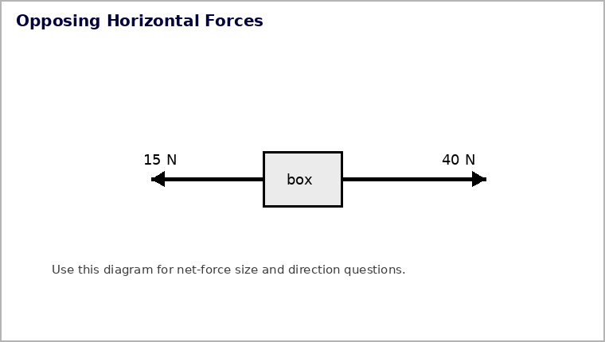
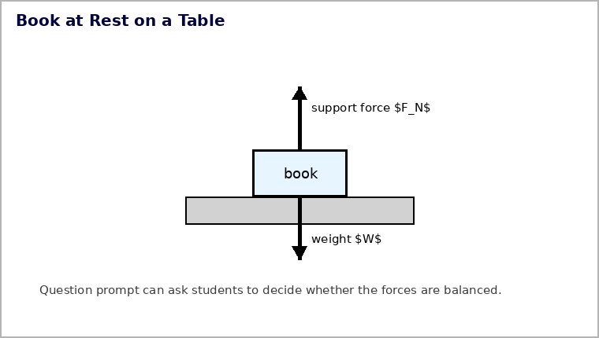

Forces and Newton’s First Law
Section 1.2
Motion does not need a force to continue; a change in motion does.
Learning Target
Students will explain Newton’s First Law and use the idea of inertia to predict whether an object’s motion will stay the same or change.
- I can state Newton’s First Law in everyday language.
- I can explain that inertia is a property of matter, not a force.
- I can distinguish between “no forces acting” and “no net force acting.” and identify support force, weight, and other common forces in simple situations.
Vocabulary / Key Notation Preview
force, inertia, Newton’s First Law, net force, support force, weight
Sort before reading. Place each term where it best fits your current understanding.
| Know for sure | Recognize | Don’t know yet |
|---|---|---|
What’s to Come
DO NOT SOLVE YET
Preview the task. Mark what you notice, what information is given, and what the problem will eventually ask you to connect.
The diagram shows a box moving to the right at constant speed while a push acts to the right and friction acts to the left. Use the same situation for all parts.

(a) Identify the two horizontal forces shown.
(b) What must the horizontal net force be if the box is moving at constant speed in a straight line?
(c) If the push is 35 N to the right, use your answer from part (b) to determine the friction force.
(d) A student says, “Because the box moves at constant speed, no forces are acting.” Use the diagram and your earlier answers to correct the statement.
Let’s Get Started
Skim before close reading. Look at the headings and figures. Find 1–2 things you notice and 1–2 things you wonder about.
| What I noticed | |
|---|---|
| What I wonder |
Close Reading Directions
READ IN SHORT CHUNKS. Annotate the words and visuals together. Underline evidence, circle or highlight bold vocabulary, label arrows, measurements, or important features, connect sentences to figures, and jot short questions or connections in the margins.
I can state Newton’s First Law in everyday language.
Newton’s First Law: Continue Unless a Net Force Changes Motion
Galileo challenged the idea that a moving object needs a continuing force just to keep moving. Newton sharpened that idea: an object at rest remains at rest, and an object moving at constant velocity continues in a straight line, unless a nonzero net external force acts.
The word continues matters. Zero net force does not make a moving object stop. It means there is no change in velocity. Friction often hides this idea in everyday life because friction supplies a force that changes motion.

If \(\Sigma \vec F=0\), velocity does not change. The object may remain at rest or continue with constant velocity in a straight line.
Example 1
A spacecraft coasts far from large external forces. Its velocity remains unchanged unless a net external force acts. Name the principle.
You Try It 1
A book remains at rest on a desk because the forces on it balance. Which law connects zero net force with unchanged motion?
I can explain that inertia is a property of matter, not a force.
Inertia Is a Property, Not a Force
Inertia is an object’s resistance to a change in velocity. It belongs to the object; it is not an interaction and should never be drawn as a force arrow. When a card is quickly pulled from under a coin, the card changes motion because of the applied force while the coin tends to keep its previous state of motion.
The same reasoning appears when a hammer stops suddenly or when a hanging mass responds differently to a slow pull and a sharp jerk. The object does not receive an “inertia force.” Instead, its motion resists changing while real interaction forces act.


Example 2
A student labels an arrow “inertia force” on a moving cart. Explain why that arrow should be removed and what inertia actually describes.
You Try It 2
Give a short everyday example of inertia, then explain why inertia is a property of the object rather than an interaction force.
I can distinguish between “no forces acting” and “no net force acting.” and identify support force, weight, and other common forces in simple situations.
Real Objects Can Have Several Forces and Still Have Zero Net Force
A force is an interaction—a push or pull—from something else. A motionless scaffold can have its weight pulling downward and rope tensions pulling upward at the same time. The fact that it is not changing velocity tells us the vector sum of those forces is zero, not that the forces have disappeared.
This distinction between no forces and no net force is central to Newton’s First Law. Several forces may cancel. The motion responds to the resultant of all forces on the chosen object.

- Use the term net force to explain how several forces can act on a motionless object.
- In the scaffold image, what do the upward arrows represent and what do the downward arrows represent?
- What motion evidence tells you the forces must balance?
Support Force and Weight
A book resting on a table has a downward gravitational force—its weight—and an upward support force from the table. The table’s atoms compress slightly and push back, much like a spring. If the book remains at rest, these vertical forces balance.
A bathroom scale also depends on support force. Standing still on the scale, your downward interaction and the floor’s upward support compress the scale mechanism. A nonzero reading can occur even while the net force on you is zero.


For an object with no vertical acceleration, upward and downward forces balance: \(\Sigma F_y=0\). Individual forces can be nonzero even when the net is zero.
Example 3
The diagram shows a box moving at constant speed. Identify the two horizontal forces and state the horizontal net force.
You Try It 3
From the opposing-force diagram, compare the leftward and rightward forces required for zero net force and state the balance condition.

Constant Speed in a Straight Line Means Balanced Net Force
Imagine pushing a box to the right while friction acts to the left. If the box travels at constant speed in a straight line, the horizontal forces have equal magnitudes and opposite directions. The push is not “causing the motion”; it is canceling friction so the velocity can remain unchanged.
A useful force model lists only forces acting on the chosen object and keeps direction visible. The same motion can result from no horizontal forces or from horizontal forces that cancel. Newton’s First Law depends on the net force, not the number of forces.
Example 4
Use the opposing-force diagram. Identify the two force directions and explain what must be true of their magnitudes for the net force to be zero.
You Try It 4
Use the book-on-table force diagram to identify the net-force condition. Which statement best describes the forces on the book?

- Weight acts down and support force acts up; they can balance.
- Only weight acts because the book is not moving.
- Only support force acts because the table holds the book.
- Inertia acts upward to cancel gravity.
Vocabulary Reference
| Term | Meaning in this section |
|---|---|
| force | A push or pull arising from an interaction. |
| inertia | The tendency of matter to resist a change in velocity. |
| Newton’s First Law | If net force is zero, an object’s velocity remains unchanged. |
| net force | The vector sum of all forces acting on the chosen object. |
| support force | A contact force from a surface, directed perpendicular to that surface. |
| weight | The gravitational force acting on an object. |
Summary
- Newton’s First Law links zero net force to unchanged velocity.
- Inertia is a property of matter, not a force.
- Several forces can act while their vector sum is zero.
- Weight and support force are real interactions that can balance at rest or during constant-velocity motion.
What I Figured Out
In 2–4 sentences, connect the most important model or relationship in this section to one piece of evidence or representation.
Common Mistakes
| Common mistake | Physics correction |
|---|---|
| Inertia is a force | Inertia is a property; draw only actual interactions as force arrows. |
| Motion needs a forward net force | Constant velocity requires zero net force. |
| Zero net force means no forces | Nonzero forces can cancel vectorially. |